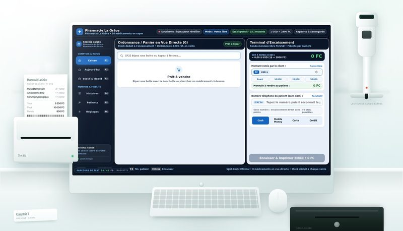
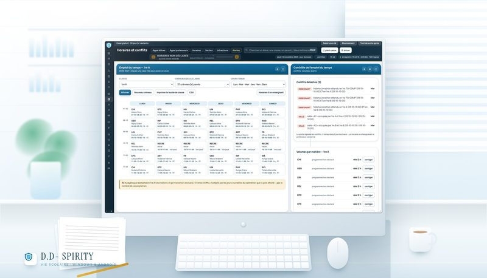

ModEric.SoftwareKinshasaÉditeur de logiciels · RDC
Des logiciels conçus pour le monde réel.
Nous imaginons et développons des solutions numériques pensées pour simplifier le travail,
améliorer l'organisation et répondre à des besoins concrets.
Un logiciel POS conçu pour les pharmacies. On scanne la boîte, la caisse trouve le
médicament, le stock se déduit et le ticket sort. La file au comptoir n'attend pas.

Douchette 2D et 1D — les codes carrés des boîtes et les codes-barres
Ticket thermique à l'encaissement, monnaie en francs et en dollars
Bibliothèque de 8 167 médicaments, deux lettres suffisent — et le suivi de lot
(ce qui périme d'abord sort d'abord)
Stock, péremption, crédits et fidélité par numéro de téléphone
15 jours d'essai, puis une clé — le paiement se fait dans le
logiciel, jamais ici.
Vie scolaire · direction des études
D.D- Spirity
Un logiciel de gestion et de suivi scolaire, destiné aux établissements et à leur direction
des études. Qui est entré, qui est en retard, quelle heure se fait — sans cahier.

Portillon, appels, discipline — chaque fait daté et signé
Horaires, conflits, personnel et paie au taux écrit par l'école
Cartes d'élèves imprimables — QR pour le portillon, CODE-128 pour le secrétariat